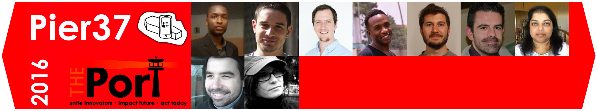

A portable photo studio for efficient forensic pictures
We are working on a convenient, ready-to-use, portable and modular photo studio to take efficient forensic pictures to provide quick and reliable body identification after natural disasters.
The problem
After natural disasters with thousands of victims, officials are often left with no other choice than burying or burning dead bodies without identifying the person. This causes additional pain to the relatives, but also creates a difficult legal and financial situation. Improving the visual identification toolset of forensic disaster teams would make their work more efficient and will leave less families in uncertainty.
The solution
We want to help photographers take better pictures.
Hardware
Before/After
Documentation and resources
Device features - Image processing
Image post processing
Contact us
For more information, send en email to THEPort-Pier37@cern.ch
